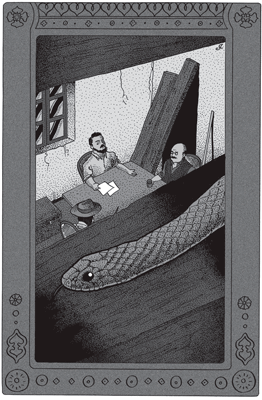
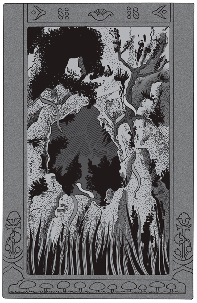
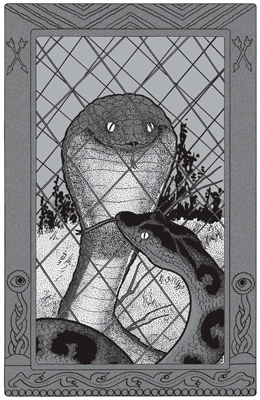
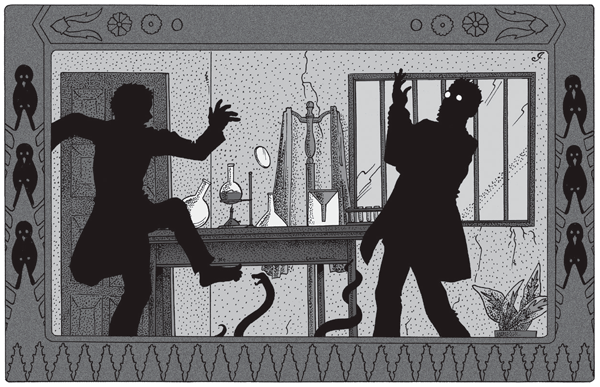
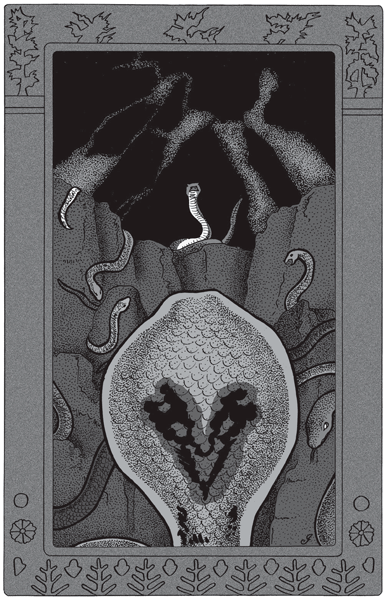
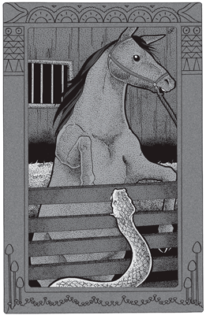
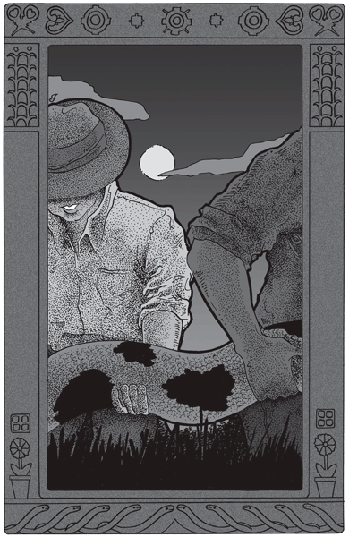

Eran las diez de la noche y hacía un calor sofocante. El tiempo cargado pesaba sobre la selva, sin un soplo de viento. El cielo de carbón se entreabría de vez en cuando en sordos relámpagos de un extremo a otro del horizonte; pero el chubasco silbante del sur estaba aún lejos.
Por un sendero de vacas en pleno espartillo blanco, avanzaba Lanceolada con la lentitud genérica de las víboras. Era una hermosísima yarará, de un metro cincuenta, con los negros ángulos de su flanco bien cortados en sierra, escama por escama. Avanzaba tanteando la seguridad del terreno con la lengua, que en los ofidios reemplaza perfectamente a los dedos.
Iba de caza. Al llegar a un cruce de senderos se detuvo, se arrolló prolijamente sobre sí misma, removiose aún un momento acomodándose y después de bajar la cabeza al nivel de sus anillos, asentó la mandíbula inferior y esperó inmóvil.
Minuto tras minuto esperó cinco horas. Al cabo de este tiempo continuaba en igual inmovilidad. ¡Mala noche! Comenzaba a romper el día e iba a retirarse, cuando cambió de idea. Sobre el cielo lívido del Este se recortaba una inmensa sombra.
–Quisiera pasar cerca de la Casa –se dijo la yarará–. Hace días que siento ruido, y es menester estar alerta…
Y marchó prudentemente hacia la sombra.
La casa a que hacía referencia Lanceolada era un viejo búngalo de madera, todo blanqueado. En torno se levantaban dos o tres galpones. Desde tiempo inmemorial el edificio había estado deshabitado. Ahora se sentían ruidos insólitos, golpes de fierros, relinchos de caballo; conjunto de cosas en que trascendía a la legua la presencia del Hombre. Mal asunto…
 |
Lanceolada vio que la Casa comenzaba a vivir. |
Pero era preciso asegurarse, y Lanceolada lo hizo mucho más pronto de lo que hubiera querido.
Un inequívoco ruido de puerta abierta llegó a sus oídos. La víbora irguió la cabeza y, mientras notaba que una rubia claridad en el horizonte anunciaba la aurora, vio una angosta sombra, alta y robusta, que avanzaba hacia ella. Oyó también el ruido de las pisadas, el golpe seguro, pleno, enormemente distanciado que denunciaba también a la legua al enemigo.
–¡El Hombre! –murmuró Lanceolada. Y rápida como el rayo se arrolló en guardia.
La sombra estuvo sobre ella. Un enorme pie cayó a su lado, y la yarará, con toda la violencia de un ataque al que jugaba la vida, lanzó la cabeza contra aquello y la recogió a la posición anterior.
El hombre se detuvo: había creído sentir un golpe en las botas. Miró el yuyo a su alrededor sin mover los pies de su lugar; pero nada vio en la oscuridad apenas rota por el vago día naciente, y siguió adelante.
Pero Lanceolada vio que la Casa comenzaba a vivir, esta vez real y efectivamente con la vida del Hombre. La yarará emprendió la retirada a su cubil llevando consigo la seguridad de que aquel acto nocturno no era sino el prólogo del gran drama a desarrollarse en breve.
Al día siguiente la primera preocupación de Lanceolada fue el peligro que con la llegada del Hombre se cernía sobre la Familia entera. Hombre y Devastación son sinónimos desde tiempo inmemorial en el Pueblo entero de los Animales. Para las Víboras en particular, el desastre se personificaba en dos horrores: el machete escudriñando, revolviendo el vientre mismo de la selva, y el fuego aniquilando el bosque en seguida, y con él los recónditos cubiles.
Tornábase, pues, urgente prevenir aquello. Lanceolada esperó la nueva noche para ponerse en campaña. Sin gran trabajo halló a dos compañeras, que lanzaron la voz de alarma. Ella, por su parte, recorrió hasta las doce los lugares más indicados para un feliz encuentro, con suerte tal que a las dos de la mañana el Congreso se hallaba, si no en pleno, por lo menos con mayoría de especies para decidir qué se haría.
En la base de un murallón de piedra viva, de cinco metros de altura, y en pleno bosque, desde luego, existía una caverna disimulada por los helechos que obstruían casi la entrada. Servía de guarida desde mucho tiempo atrás a Terrífica, una serpiente de cascabel, vieja entre las viejas, cuya cola contaba treinta y dos cascabeles. Su largo no pasaba de un metro cuarenta, pero en cambio su grueso alcanzaba al de una botella. Magnífico ejemplar, cruzada de rombos amarillos, vigorosa, tenaz, capaz de quedar siete horas en el mismo lugar frente al enemigo, pronta a enderezar los colmillos con canal interno que son, como se sabe, si no los más grandes, los más admirablemente constituidos de todas las serpientes venenosas.
Fue allí, en consecuencia, donde ante la inminencia del peligro y presidido por la víbora de cascabel, se reunió el Congreso de las Víboras. Estaban allí, fuera de Lanceolada y Terrífica, las demás yararás del país: la pequeña Coatiarita, benjamín de la Familia, con la línea rojiza de sus costados bien visible y su cabeza particularmente afilada. Estaba allí, negligentemente tendida como si se tratara de todo menos de hacer admirar las curvas blancas y café de su lomo sobre largas bandas salmón, la esbelta Neuwied, dechado de belleza, y que había guardado para sí el nombre del naturalista que determinó su especie. Estaba Cruzada –que en el sur llaman víbora de la cruz–, potente y audaz, rival de Neuwied en punto a belleza de dibujo. Estaba Atroz, de nombre suficientemente fatídico; y por último, Urutú Dorado, la yararacusú, disimulando discretamente en el fondo de la caverna sus ciento setenta centímetros de terciopelo negro cruzado oblicuamente por bandas de oro.
 |
Fue allí donde se reunió |
Es de notar que las especies del formidable género Lachesis, o yararás, a que pertenecían todas las congresales menos Terrífica, sostienen una vieja rivalidad por la belleza del dibujo y el color. Pocos seres, en efecto, tan bien dotados como ellos.
Según las leyes de las víboras, ninguna especie poco abundante y sin dominio real en el país puede presidir las asambleas del Imperio. Por esto Urutú Dorado, magnífico animal de muerte, pero cuya especie es más bien rara, no pretendía este honor, cediéndolo de buen grado a la víbora de cascabel, más débil, pero que abunda milagrosamente.
El Congreso estaba, pues, en mayoría, y Terrífica abrió la sesión.
–¡Compañeras! –dijo–. Hemos sido todas enteradas por Lanceolada de la presencia nefasta del Hombre. Creo interpretar el anhelo de todas nosotras, al tratar de salvar nuestro Imperio de la invasión enemiga. Sólo un medio cabe, pues la experiencia nos dice que el abandono del terreno no remedia nada. Este medio, ustedes lo saben bien, es la guerra al Hombre, sin tregua ni cuartel, desde esta noche misma, a la cual cada especie aportará sus virtudes. Me halaga en esta circunstancia olvidar mi especificación humana: No soy ahora una serpiente de cascabel; soy una yarará como ustedes. Las yararás, que tienen a la Muerte por negro pabellón. ¡Nosotras somos la Muerte, compañeras! Y entretanto, que alguna de las presentes proponga un plan de campaña.
Nadie ignora, por lo menos en el Imperio de las Víboras, que todo lo que Terrífica tiene de largo en sus colmillos lo tiene de corto en su inteligencia. Ella lo sabe también, y aunque incapaz por lo tanto de idear plan alguno, posee, a fuerza de vieja reina, el suficiente tacto para callarse.
Entonces Cruzada, desperezándose, dijo:
–Soy de la opinión de Terrífica, y considero que, mientras no tengamos un plan, nada podemos ni debemos hacer. Lo que lamento es la falta en este Congreso de nuestras primas sin veneno: las Culebras.
Se hizo un largo silencio. Evidentemente, la proposición no halagaba a las víboras. Cruzada se sonrió de un modo vago, y continuó:
–Lamento lo que pasa… Pero quisiera solamente recordar esto: si entre todas nosotras pretendiéramos vencer a una culebra, ¡no lo conseguiríamos! Nada más quiero decir.
–Si es por su resistencia al veneno –objetó perezosamente Urutú Dorado, desde el fondo del antro–, creo que yo sola me encargaría de desengañarlas…
–No se trata de veneno –replicó desdeñosamente Cruzada–. Yo también me bastaría… –agregó con una mirada de reojo a la yararacusú–. Se trata de su fuerza, de su destreza, de su nerviosidad, como quiera llamársele. Cualidades de lucha que nadie pretenderá negar a nuestras primas. Insisto en que en una campaña como la que queremos emprender las serpientes nos serán de gran utilidad; más: ¡de imprescindible necesidad!
Pero la proposición desagradaba siempre.
–¿Por qué las culebras? –exclamó Atroz–. Son despreciables.
–Tienen ojos de pescado –agregó la presuntuosa Coatiarita.
–¡Me dan asco! –protestó desdeñosamente Lanceolada.
–Tal vez sea otra cosa lo que te dan… –murmuró Cruzada, mirándola de reojo.
–¿A mí? –silbó Lanceolada, irguiéndose–. ¡Te advierto que haces mala figura aquí, defendiendo a esos gusanos corredores!
–Si te oyen las Cazadoras… –murmuró irónicamente Cruzada.
Pero al oír este nombre, Cazadoras, la asamblea entera se agitó.
–¡No hay para qué decir eso! –gritaron–. ¡Ellas son culebras, y nada más!
–¡Ellas se llaman a sí mismas las Cazadoras! –replicó secamente Cruzada–. Y estamos en Congreso.
También desde tiempo inmemorial es fama entre las víboras la rivalidad particular de las dos yararás: Lanceolada, hija del extremo norte, y Cruzada, cuyo hábitat se extiende más al sur. Cuestión de coquetería en punto a belleza según las culebras.
–¡Vamos, vamos! –intervino Terrífica–. Que Cruzada explique para qué quiere la ayuda de las culebras, siendo así que no representan la Muerte como nosotras.
–¡Para esto! –replicó Cruzada ya en calma–. Es indispensable saber qué hace el Hombre en la casa; y para ello se precisa ir hasta allá, a la casa misma. Ahora bien, la empresa no es fácil, porque si el pabellón de nuestra especie es la Muerte, el pabellón del Hombre es también la Muerte. ¡Y bastante más rápida que la nuestra! Las serpientes nos aventajan inmensamente en agilidad. Cualquiera de nosotras iría y vería. Pero ¿volvería? Nadie mejor para esto que Ñacaniná. Estas exploraciones forman parte de sus hábitos diarios, y podría, trepada al techo, ver, oír, y regresar a informarnos antes de que sea de día.
La proposición era tan razonable que esta vez la asamblea entera asintió, aunque con un resto de desagrado.
–¿Quién va a buscarla? –preguntaron varias voces.
Cruzada desprendió la cola de un tronco y se deslizó afuera.
–¡Voy yo! –dijo–. Enseguida vuelvo.
–¡Eso es! –le lanzó Lanceolada de atrás–. ¡Tú que eres su protectora la hallarás en seguida!
Cruzada tuvo aún tiempo de volver la cabeza hacia ella, y le sacó la lengua: reto a largo plazo.
Cruzada halló a Ñacaniná cuando ésta trepaba a un árbol.
–¡Eh, Ñacaniná! –llamó con un leve silbido.
Ñancaniná oyó su nombre; pero se abstuvo prudentemente de contestar hasta nueva llamada.
–¡Ñacaniná! –repitió Cruzada, levantando medio tono su silbido.
–¿Quién me llama? –respondió la culebra.
–¡Soy yo, Cruzada!
–¡Ah, la prima…! ¿Qué quieres, prima adorada?
–No se trata de bromas, Ñacaniná… ¿Sabes lo que pasa en la Casa?
–Sí, que ha llegado el Hombre… ¿Qué más?
–Y, ¿sabes que estamos en Congreso?
–¡Ah, no; esto no lo sabía! –repuso Ñacaniná, deslizándose cabeza abajo contra el árbol, con tanta seguridad como si marchara sobre un plano horizontal–. Algo grave debe pasar para eso… ¿Qué ocurre?
–Por el momento, nada; pero nos hemos reunido en Congreso precisamente para evitar que nos ocurra algo. En dos palabras: se sabe que hay varios hombres en la Casa, y que se van a quedar definitivamente. Es la Muerte para nosotras.
–Yo creía que ustedes eran la Muerte por sí mismas… ¡No se cansan de repetirlo! –murmuró irónicamente la culebra.
–¡Dejemos esto! Necesitamos de tu ayuda, Ñacaniná.
–¿Para qué? ¡Yo no tengo nada que ver aquí!
–¿Quién sabe? Para desgracia tuya, te pareces bastante a nosotras, las Venenosas. Defendiendo nuestros intereses, defiendes los tuyos.
–¡Comprendo! –repuso Ñacaniná después de un momento, en el que valoró la suma de contingencias desfavorables para ella por aquella semejanza.
–Bueno; ¿contamos contigo?
–¿Qué debo hacer?
–Muy poco. Ir enseguida a la Casa, y arreglarte allí de modo que veas y oigas lo que pasa.
–¡No es mucho, no! –repuso negligentemente Ñacaniná, restregando la cabeza contra el tronco–. Pero es el caso –agregó– que allá arriba tengo la cena segura… Una pava del monte a la que desde anteayer se le ha puesto en el copete anidar allí…
–Tal vez allá encuentres algo que comer –la consoló suavemente Cruzada. Su prima la miró de reojo.
–Bueno, en marcha –reanudó la yarará–. Pasemos primero por el Congreso.
–¡Ah, no! –protestó Ñacaniná–. ¡Eso no! ¡Les hago a ustedes el favor, y en paz! Iré al Congreso cuando vuelva… si vuelvo. Pero ver antes de tiempo la cáscara rugosa de Terrífica, los ojos de matón de Lanceolada y la cara estúpida de Coralina. ¡Eso, no!
–No está Coralina.
–¡No importa! Con el resto tengo bastante.
–¡Bueno, bueno! –repuso Cruzada, que no quería hacer hincapié–. Pero si no disminuyes un poco la marcha, no te sigo.
En efecto, aun a todo correr, la yarará no podía acompañar el deslizar –casi lento para ella– de la Ñacaniná.
–Quédate, ya estás cerca de las otras –contestó la culebra. Y se lanzó a toda velocidad, dejando en un segundo atrás a su prima Venenosa.
Un cuarto de hora después la Cazadora llegaba a su destino. Velaban todavía en la casa. Por las puertas, abiertas de par en par, salían chorros de luz, y ya desde lejos Ñacaniná pudo ver cuatro hombres sentados alrededor de la mesa.
Para llegar con impunidad sólo faltaba evitar el problemático tropiezo con un perro. ¿Los habría? Mucho lo temía Ñacaniná. Por esto deslizose adelante con gran cautela, sobre todo cuando llegó ante el corredor.
Ya en él, observó con atención. Ni enfrente, ni a la derecha, ni a la izquierda había perro alguno. Sólo allá, en el corredor opuesto y que la culebra podía ver por entre las piernas de los hombres, un perro negro dormía echado de costado.
La plaza, pues, estaba libre. Como desde el lugar en que se encontraba podía oír pero no ver el panorama entero de los hombres hablando, la culebra, tras una ojeada arriba, tuvo lo que deseaba en un momento. Trepó por una escalera recostada a la pared bajo el corredor y se instaló en el espacio libre entre pared y techo, tendida sobre el tirante. Pero por más precauciones que tomara al deslizarse, un viejo clavo cayó al suelo y un hombre levantó los ojos.
–¡Se acabó! –se dijo Ñacaniná, conteniendo la respiración.
Otro hombre miró también arriba.
–¿Qué hay? –preguntó.
–Nada –repuso el primero–. Me pareció ver algo negro por allá.
–Una rata.
–Se equivocó el Hombre –murmuró para sí la culebra.
–O alguna ñacaniná.
–Acertó el otro Hombre –murmuró de nuevo la aludida, aprestándose a la lucha.
Pero los hombres bajaron de nuevo la vista, y Ñacaniná vio y oyó durante media hora.
La Casa, motivo de preocupación de la selva, habíase convertido en establecimiento científico de la más grande importancia. Conocida ya desde tiempo atrás la particular riqueza en víboras de aquel rincón del territorio, el Gobierno de la Nación había decidido la creación de un instituto de Seroterapia Ofídica, donde se prepararían sueros contra el veneno de las víboras. La abundancia de éstas es un punto capital, pues nadie ignora que la carencia de víboras de que extraer el veneno es el principal inconveniente para una vasta y segura preparación del suero.
El nuevo establecimiento podía comenzar casi en seguida, porque contaba con dos o tres caballos ya en vías de completa inmunización. Habíase logrado organizar el laboratorio y el serpentario. Este último prometía enriquecerse de un modo asombroso, por más que el Instituto hubiera llevado consigo no pocas serpientes venenosas, las mismas que servían para inmunizar a los animales citados.
Pero si se tiene en cuenta que un caballo, en su último grado de inmunización, necesita seis gramos de veneno en cada inyección (cantidad suficiente para matar doscientos cincuenta caballos), se comprenderá que deba ser muy grande el número de víboras en disponibilidad que requiere un instituto del género.
Los días, duros al principio, de una instalación en la selva, mantenían al personal superior del Instituto en vela hasta medianoche, entre planes de laboratorio y demás.
–Y los caballos, ¿cómo están hoy? –preguntó uno, de lentes negros, y que parecía ser el jefe del Instituto.
–Muy caídos –repuso otro–. Si no podemos hacer una buena recolección en estos días…
Ñacaniná, inmóvil sobre el tirante, ojos y oídos alerta, comenzaba a tranquilizarse.
–Me parece –se dijo– que las primas venenosas se han llevado un susto magnífico. De estos hombres no hay gran cosa que temer…
Y avanzando más la cabeza, a tal punto que su nariz pasaba ya la línea del tirante, observó con más atención.
Pero un contratiempo evoca otro.
–Hemos tenido hoy un día malo –agregó alguno–. Cinco tubos de ensayo se han roto…
Ñacaniná sentíase cada vez más inclinada a la compasión.
–¡Pobre gente! –murmuró–. Se les han roto cinco tubos… –y se disponía a abandonar su escondite para explorar aquella inocente casa, cuando oyó:
–En cambio, las víboras están magníficas… Parece sentarles el país.
–¿Eh? –dio una sacudida la culebra, jugando velozmente con la lengua–. ¿Qué dice ese pelado de traje blanco?
Pero el hombre proseguía:
–Para ellas, sí, el lugar me parece ideal… Y las necesitamos urgentemente, los caballos y nosotros.
–Por suerte, vamos a hacer una famosa cacería de víboras en este país. No hay duda de que es el país de las víboras.
–Hum… hum… hum… –murmuró Ñacaniná, arrollándose en el tirante cuanto le fue posible–. Las cosas comienzan a ser un poco distintas… Hay que quedar un poco más con esta buena gente… Se aprenden cosas curiosas.
Tantas cosas curiosas oyó, que cuando, al cabo de media hora, quiso retirarse, el exceso de sabiduría adquirida le hizo hacer un falso movimiento y la tercera parte de su cuerpo cayó, golpeando la pared de tablas. Como había caído de cabeza, en un instante la tuvo enderezada hacia la mesa, la lengua vibrante.
La ñacaniná, cuyo largo puede alcanzar a tres metros, es valiente, con seguridad la más valiente de nuestras serpientes. Resiste un ataque serio del hombre, que es inmensamente mayor que ella, y hace frente siempre. Como su propio coraje le hace creer que es muy temida, la nuestra se sorprendió un poco al ver que los hombres, enterados de lo que se trataba, se echaron a reír tranquilos.
–Es una ñacaniná… Mejor; así nos limpiará la casa de ratas.
–¿Ratas…? –silbó la otra. Y como continuaba provocativa, un hombre se levantó al fin.
–Por útil que sea, no deja de ser un mal bicho… Una de estas noches la voy a encontrar buscando ratones dentro de mi cama… –y cogiendo un palo próximo, lo lanzó contra la ñacaniná a todo vuelo. El palo pasó silbando junto a la cabeza de la intrusa y golpeó con terrible estruendo la pared.
Hay ataque y ataque. Fuera de la selva, y entre cuatro hombres, la ñacaniná no se hallaba a gusto. Se retiró a escape, concentrando toda su energía en la cualidad que, juntamente con el valor, forman sus dos facultades primas: la velocidad para correr.
Perseguida por los ladridos del perro, y aun rastreada buen trecho por éste –lo que abrió nueva luz con respecto a las gentes aquellas–, la culebra llegó a la caverna. Pasó por encima de Lanceolada y Atroz, y se arrolló a descansar, muerta de fatiga.
–¡Por fin! –exclamaron todas, rodeando a la exploradora–. Creíamos que te ibas a quedar con tus amigos los Hombres…
–¡Hum!… –murmuro Ñacaniná.
–¿Qué nuevas nos traes? –preguntó Terrífica.
–¿Debemos esperar un ataque, o no tomar en cuenta a los Hombres?
–Tal vez fuera mejor esto… Y pasar al otro lado del río –repuso Ñacaniná.
–¿Qué?… ¿Cómo? –saltaron todos–. Estás loca.
–Oigan, primero.
–¡Cuenta, entonces!
Y Ñacaniná contó todo lo que había visto y oído: la instalación del Instituto Seroterápico, sus planes, sus fines y la decisión de los hombres de cazar cuanta víbora hubiera en el país.
–¡Cazarnos! –saltaron Urutú Dorado, Cruzada y Lanceolada, heridas en lo más vivo de su orgullo–. ¡Matarnos, querrás decir!
–¡No! ¡Cazarlas, nada más! Encerrarlas, darles bien de comer y extraerles cada veinte días el veneno. ¿Quieren vida más dulce?
La asamblea quedó estupefacta. Ñacaniná había explicado muy bien el fin de esta recolección de veneno; pero lo que no había explicado eran los medios para llegar a obtener el suero.
¡Un suero antivenenoso! Es decir, la curación asegurada, la inmunización de hombres y animales contra la mordedura; la Familia entera condenada a perecer de hambre en plena selva natal.
–¡Exactamente! –apoyó Ñacaniná–. No se trata sino de esto.
Para la ñacaniná, el peligro previsto era mucho menor. ¿Qué le importaba a ella y sus hermanas las cazadoras –a ellas, que cazaban a diente limpio, a fuerza de músculos– que los animales estuvieran o no inmunizados? Un solo punto oscuro veía ella, y es el excesivo parecido de una culebra con una víbora, que favorecía confusiones mortales. De aquí el interés de la culebra en suprimir el Instituto.
–Yo me ofrezco a empezar la campaña –dijo Cruzada–. ¿Tienes un plan? –preguntó ansiosa Terrífica, siempre falta de ideas.
–Ninguno. Iré sencillamente mañana de tarde a tropezar con alguien.
–¡Ten cuidado! –le dijo Ñacaniná, con voz persuasiva–. Hay varias jaulas vacías… ¡Ah, me olvidaba! –agregó, dirigiéndose a Cruzada–. Hace un rato, cuando salí de allí… Hay un perro negro muy peludo… Creo que sigue el rastro de una víbora… ¡Ten cuidado!
–¡Allá veremos! Pero pido que se llame a Congreso pleno para mañana de noche. Si yo no puedo asistir, tanto peor…
Mas la asamblea había caído en nueva sorpresa.
–¿Perro que sigue nuestro rastro…? ¿Estás segura?
–Yo me encargo de él –exclamó Terrífica, contenta de (sin mayor esfuerzo mental) poder poner en juego sus glándulas de veneno, que a la menor contracción nerviosa se escurría por el canal de los colmillos.
Pero ya cada víbora se disponía a hacer correr la palabra ensu distrito, y a Ñacaniná, gran trepadora, se le encomendó especialmente llevar la voz de alerta a los árboles, reino preferido de las culebras.
A las tres de la mañana la asamblea se disolvió. Las víboras, vueltas a la vida normal, se alejaron en distintas direcciones, desconocidas ya las unas para las otras, silenciosas, sombrías, mientras en el fondo de la caverna la serpiente de cascabel quedaba arrollada e inmóvil, fijando sus duros ojos de vidrio en un ensueño de mil perros paralizados.
Era la una de la tarde. Por el campo de fuego, al resguardo de las matas de espartillo, se arrastraba Cruzada hacia la Casa. No llevaba otra idea, ni creía necesario tener otra, que matar al primer hombre que se pusiera a su encuentro. Llegó a la baranda y se arrolló allí, esperando. Pasó así media hora. El calor sofocante que reinaba desde tres días atrás comenzaba a pesar sobre los ojos de la yarará, cuando un temblor sordo avanzó desde la pieza. La puerta estaba abierta, y ante la víbora, a treinta centímetros de su cabeza, apareció el perro, el perro negro y peludo, con los ojos entornados de sueño.
–¡Maldita bestia…! –se dijo Cruzada–. Hubiera preferido un hombre…
En ese instante el perro se detuvo husmeando, y volvió la cabeza… ¡Tarde ya! Ahogó un aullido de sorpresa y movió desesperadamente el hocico mordido.
–Casi. ¡Ojo con ese perro, porque puede hacernos más daño que todos los hombres juntos!
–Ya éste está despachado… –murmuró Cruzada, replegándose de nuevo. Pero cuando el perro iba a lanzarse sobre la víbora, sintió los pasos de su amo y se arqueó ladrando a la yarará. El hombre de los lentes ahumados apareció junto a Cruzada.
–¿Qué pasa? –preguntaron desde el otro corredor.
–Una alternatus… Buen ejemplar –respondió el hombre. Y antes de que hubiera podido defenderse, la víbora se sintió estrangulada en una especie de prensa afirmada al extremo de un palo.
La yarará crujió de orgullo al verse así; lanzó su cuerpo a todos lados, trató en vano de recogerlo y arrollarlo en el palo. Imposible; le faltaba el punto de apoyo en la cola, el famoso punto de apoyo sin el cual una poderosa boa se encuentra reducida a la más vergonzosa impotencia. El hombre la llevó así colgando, y fue arrojada en el Serpentario.
Constituíalo éste un simple espacio de tierra cercado con chapas de zinc liso, provisto de algunas jaulas, y que albergaba a treinta o cuarenta víboras. Cruzada cayó en tierra y se mantuvo un momento arrollada y congestionada bajo el sol de fuego.
La instalación era evidentemente provisoria; grandes y chatos cajones alquitranados servían de bañadera a las víboras, y varias casillas y piedras amontonadas ofrecían reparo a los huéspedes de ese paraíso improvisado.
Un instante después la yarará se veía rodeada y pasada por encima por cinco o seis compañeras que iban a reconocer su especie.
Cruzada las conocía a todas; pero no así a una gran víbora que se bañaba en una jaula cerrada con tejido de alambre. ¿Quién era? Era absolutamente desconocida para la yarará. Curiosa a su vez, se acercó lentamente.
Se acercó tanto, que la otra se irguió. Cruzada ahogó un silbido de estupor, mientras caía en guardia, arrollada. La gran víbora acababa de hinchar el cuello, pero monstruosamente, mucho más que Biopeva, su prima. Quedaba realmente extraordinaria así.
–¿Quién eres? –murmuró Cruzada–. ¿Eres de las nuestras?
Es decir, venenosa. La otra, convencida de que no había habido intención de ataque en la aproximación de la yarará, aplastó sus dos grandes orejas.
–Sí –repuso–. Pero no de aquí… de muy lejos… de la India.
–¿Cómo te llamas?
–Hamadrías… o cobra capelo real.
–Yo soy Cruzada.
–Sí, no necesitas decido. He visto muchas hermanas tuyas ya… ¿Cuándo te cazaron?
–Hace un rato. No pude matar.
–Mejor hubiera sido para ti que te hubieran muerto…
–Pero maté al perro.
–¿Qué perro? ¿El de aquí?
–Sí.
La cobra real se echó a reír, a tiempo que Cruzada tenía una nueva sacudida: el perro lanudo que creía haber matado estaba ladrando…
–¿Te sorprende, eh? –agregó Hamadrías–. A muchas les ha pasado lo mismo.
–Pero es que mordí en la cabeza… –contestó Cruzada, cada vez más aturdida–. No me queda una gota de veneno –concluyó–. Es patrimonio de las yararás vaciar casi en una mordida sus glándulas.
–Para él es lo mismo que te hayas vaciado o no…
–¿No puede morir?
–Sí, pero no por cuenta nuestra… Está inmunizado. Pero tú no sabes lo que es esto…
 |
Ambas víboras se miraron largo rato. |
–¡Sé! –repuso vivamente Cruzada–. ¡Ñacaniná nos contó…! La cobra real la consideró entonces atentamente.
–Tú me pareces inteligente…
–¡Tanto como tú… por lo menos! –replicó Cruzada.
El cuello de la asiática se expandió bruscamente de nuevo, y de nuevo la yarará cayó en guardia.
Ambas víboras se miraron largo rato, y el capuchón de la cobra bajó lentamente.
–Inteligente y valiente –murmuró Hamadrías–. A ti se te puede hablar… ¿Conoces el nombre de mi especie?
–Hamadrías, supongo.
–O Naja búngaro… o cobra capelo real. Nosotras somos respecto de la vulgar cobra capelo de la India lo que tú respecto de una de esas coatiaritas… ¿Y sabes de qué nos alimentamos?
–No.
–De víboras americanas… entre otras cosas –concluyó balanceando la cabeza ante Cruzada.
Ésta apreció rápidamente el tamaño de la extranjera ofiófaga.
–¿Dos metros cincuenta? –preguntó.
–Sesenta… dos sesenta, pequeña Cruzada –repuso la otra, que había seguido su mirada.
–Es un buen tamaño… Más o menos, el largo de Anaconda, una prima mía. ¿Sabes de qué se alimenta?
–Supongo…
–Sí, de víboras asiáticas –y miró a su vez a Hamadrías.
–¡Bien contestado! –repuso ésta, balanceándose de nuevo. Y después de refrescarse la cabeza en el agua, agregó perezosamente–: ¿Prima tuya, dijiste?
–Sí.
–¿Sin veneno, entonces?
–Así es… y por esto justamente tiene gran debilidad por las extranjeras venenosas.
Pero la asiática no la escuchaba ya, absorta en sus pensamientos.
–¡Óyeme! –dijo de pronto–. ¡Estoy harta de hombres, perros, caballos y de todo este infierno de estupidez y crueldad! Tú me puedes entender, porque lo que es ésas… Llevo año y medio encerrada en una jaula como si fuera una rata, maltratada, torturada periódicamente. Y, lo que es peor, despreciada, manejada como un trapo por viles hombres… Y yo, que tengo valor, fuerza y veneno suficientes para concluir con todos ellos, estoy condenada a entregar mi veneno para la preparación de sueros antivenenosos. ¡No te puedes dar cuenta de lo que esto supone para mi orgullo! ¿Me entiendes? –concluyó mirando en los ojos a la yarará.
–Sí –repuso la otra–. ¿Qué debo hacer?
–Una sola cosa; un solo medio tenemos de vengarnos hasta las heces… Acércate, que no nos oigan… Tú sabes la necesidad absoluta de un punto de apoyo para poder desplegar nuestra fuerza… Toda nuestra salvación depende de esto. Solamente…
–¿Qué?
La cobra real miró otra vez fijamente a Cruzada.
–Solamente que puedes morir…
–¿Sola?
–¡Oh, no! Ellos, algunos de los hombres también morirán…
–¡Es lo único que deseo! Continúa.
–Pero acércate aún… ¡Más cerca!
El diálogo continuó un rato en voz tan baja que el cuerpo de la yarará frotaba, descamándose, contra las mallas de alambre. De pronto, la cobra se abalanzó y mordió por tres veces a Cruzada. Las víboras, que habían seguido de lejos el incidente, gritaron:
–¡Ya está! ¡Ya la mató! ¡Es una traicionera!
Cruzada, mordida por tres veces en el cuello, se arrastró pesadamente por el pasto. Muy pronto quedó inmóvil, y fue a ella a quien encontró el empleado del Instituto cuando, tres horas después, entró en el Serpentario. El hombre vio a la yarará, y empujándola con el pie, le hizo dar vuelta como a una soga y miró su vientre blanco.
–Está muerta, bien muerta… –murmuró–. Pero ¿de qué? –y se agachó a observar a la víbora. No fue largo su examen: en el cuello y en la misma base de la cabeza notó huellas inequívocas de colmillos venenosos.
–¡Hum! –se dijo el hombre. Esta no puede ser más que la hamadrías… Allí está, arrollada y mirándome como si yo fuera otra alternatus… Veinte veces le he dicho al director que las mallas del tejido son demasiado grandes. Ahí está la prueba… En fin –concluyó, cogiendo a Cruzada por la cola y lanzándola por encima de la barrera de zinc–, ¡un bicho menos que vigilar!
Fue a ver al director:
–La hamadrías ha mordido a la yarará que introdujimos hace un rato. Vamos a extraerle muy poco veneno.
–Es un fastidio grande –repuso aquél–. Pero necesitamos para hoy el veneno… No nos queda más que un solo tubo de suero… ¿Murió la alternatus?
–Sí, la tiré afuera… ¿Traigo a la hamadrías?
–No hay más remedio… Pero para la segunda recolección, de aquí a dos o tres horas.
…Se hallaba quebrantada, exhausta de fuerzas. Sentía la boca llena de tierra y sangre. ¿Dónde estaba?
El velo denso de sus ojos comenzaba a desvanecerse, y Cruzada alcanzó a distinguir el contorno. Vio –y reconoció– el muro de zinc, y súbitamente recordó todo: el perro negro, el lazo, la inmensa serpiente asiática y el plan de batalla de ésta en que ella misma, Cruzada, iba jugando su vida. Recordaba todo, ahora que la parálisis provocada por el veneno comenzaba a abandonarla. Con el recuerdo, tuvo conciencia plena de lo que debía hacer. ¿Sería tiempo todavía?
 |
El peón, al sentir su pie quemado |
Intentó arrastrarse, mas en vano; su cuerpo ondulaba, pero en el mismo sitio, sin avanzar. Pasó un rato aún y su inquietud crecía.
–¡Y no estoy sino a treinta metros! –murmuraba–. ¡Dos minutos, un solo minuto de vida, y llego a tiempo! –y tras nuevo esfuerzo consiguió deslizarse, arrastrarse desesperadamente hacia el laboratorio.
Atravesó el patio, llegó a la puerta en el momento en que el empleado, con las dos manos sostenía, colgando en el aire a Hamadrías, mientras el hombre de los lentes ahumados le introducía el vidrio de reloj en la boca. La mano se dirigía a oprimir las glándulas, y Cruzada estaba aún en el dintel.
–¡No tendré tiempo! –se dijo desesperada. Y arrastrándose en un supremo esfuerzo, tendió adelante los blanquísimos colmillos. El peón, al sentir su pie descalzo quemado por los dientes de la yarará, lanzó una exclamación y se agitó. No mucho; pero lo suficiente para que el cuerpo colgante de la cobra real oscilara y alcanzase a la pata de la mesa, donde se arrolló velozmente. Y con ese punto de apoyo, arrancó su cabeza de entre las manos del peón y fue a clavar hasta la raíz los colmillos en la muñeca izquierda del hombre de lentes ahumados, justamente en una vena.
¡Ya estaba! Con los primeros gritos, ambas, la cobra asiática y la yarará, huían sin ser perseguidas.
–¡Un punto de apoyo! –murmuraba la cobra volando a escape por el campo–. Nada más que eso me faltaba. ¡Ya lo conseguí, por fin!
–Sí –corría la yarará a su lado, muy dolorida aún–. Pero no volvería a repetir el juego…
Allá, de la muñeca del hombre pendían dos negros hilos de sangre pegajosa. La inyección de una hamadrías en una vena es cosa demasiado seria para que un mortal pueda resistirla largo rato con los ojos abiertos. Los del herido se cerraban para siempre a los cuatro minutos.
El Congreso estaba en pleno. Fuera de Terrífica y Ñacaniná, y las yararás Urutú Dorado, Coatiarita, Neuwied, Atroz y Lanceolada, había acudido Coralina, de cabeza estúpida –según Ñacaniná–, lo que no obsta para que su mordedura sea de las más dolorosas. Además es hermosa, incontestablemente hermosa con sus anillos rojos y negros.
Siendo, como es sabido, muy fuerte la vanidad de las víboras en punto de belleza, Coralina se alegraba bastante de la ausencia de su hermana Frontal, cuyos triples anillos negros y blancos sobre fondo de púrpura colocan a esta víbora de coral en el más alto escalón de la belleza ofídica.
Las Cazadoras estaban representadas esa noche por Drimobia, en primer término, cuyo destino es ser llamada yararacusú del monte, aunque su aspecto sea bien distinto. Asistían Cipó, de un hermoso verde y gran cazadora de pájaros; Radínea, pequeña y oscura, que no abandona jamás los charcos; Boipeva, cuya característica es achatarse completamente contra el suelo, apenas se siente amenazada; Trigémina y Esculapia, como sus compañeras arborícolas.
Faltaban asimismo varias especies de las venenosas y las cazadoras, ausencia esta que requiere una aclaración.
Al decir Congreso pleno, hemos hecho referencia a la gran mayoría de las especies, y sobre todo de las que se podría llamar reales por su importancia. Desde el primer Congreso de las Víboras se acordó que las especies numerosas, estando en mayoría, podían dar carácter de absoluta fuerza a sus decisiones. De aquí la plenitud del Congreso actual, bien que fuera lamentable la ausencia de la yarará Surucusú, a quien no había sido posible hallar por ninguna parte; hecho tanto más de sentir cuanto que esta víbora, que puede alcanzar tres metros, es, a la vez la que reina en América, viceemperatriz del Imperio Mundial de las Víboras, pues sólo una la aventaja en tamaño y potencia de veneno: la hamadrías asiática.
Alguna faltaba –fuera de Cruzada–; pero las víboras todas afectaban no darse cuenta de su ausencia.
A pesar de todo, se vieron forzadas a volverse al ver asomar por entre los helechos una cabeza de grandes ojos vivos.
–¿Se puede? –decía la visitante alegremente.
Como si una chispa eléctrica hubiera recorrido todos los cuerpos, las víboras irguieron la cabeza al oír aquella voz.
–¿Qué quieres aquí? –gritó Lanceolada con profunda irritación.
–¡Este no es tu lugar! –exclamó Urutú Dorado, dando por primera vez señales de vivacidad.
–¡Fuera! ¡Fuera! –gritaron varias con intenso desasosiego.
Pero Terrífica, con silbido claro, aunque trémulo, logró hacerse oír.
–¡Compañeras! No olviden que estamos en Congreso, y todas conocemos sus leyes; nadie, mientras dure, puede ejercer acto alguno de violencia. ¡Entra, Anaconda!
–¡Bien dicho! –exclamó Ñacaniná con sorda ironía–. Las nobles palabras de nuestra reina nos aseguran. ¡Entra, Anaconda!
Y la cabeza viva y simpática de Anaconda avanzó, arrastrando tras de sí dos metros cincuenta de cuerpo oscuro y elástico. Pasó ante todas, cruzando una mirada de inteligencia con Ñacaniná, y fue a arrollarse, con leves silbidos de satisfacción, junto a Terrífica, quien no pudo menos de estremecerse.
–¿Te incomodo? –le preguntó cortésmente Anaconda.
–¡No, de ninguna manera! –contestó Terrífica–. Son las glándulas de veneno que me incomodan, de hinchadas…
Anaconda y Ñacaniná tornaron a cruzar una mirada irónica, y prestaron atención.
La hostilidad bien evidente de la asamblea hacia la recién llegada tenía un cierto fundamento, que no se dejará de apreciar. La anaconda es la reina de todas las serpientes habidas y por haber, sin exceptuar a la pitón malaya. Su fuerza es extraordinaria, y no hay animal de carne y hueso capaz de resistir un abrazo suyo. Cuando comienza a dejar caer del follaje sus diez metros de cuerpo liso con grandes manchas de terciopelo negro, la selva entera se crispa y encoge.
Pero la anaconda es demasiado fuerte para odiar a sea quien fuere – con una sola excepción–, y esta conciencia de su valor le hace conservar siempre buena amistad con el hombre. Si a alguien detesta, es, naturalmente, a las serpientes venenosas; y de aquí la conmoción de las víboras ante la cortés Anaconda.
Anaconda no es, sin embargo, hija de la región. Vagabundeando en las aguas espumosas del Paraná había llegado hasta allí con una gran creciente, y continuaba en la región muy contenta del país, enbuena relación con todos, y en particular con Ñacaniná, con quien había trabado viva amistad. Era, por lo demás, aquel ejemplar una joven anaconda que distaba aún mucho de alcanzar los diez metros de sus felices abuelos. Pero los dos metros cincuenta que medía ya valían por el doble, si se considera la fuerza de esta magnífica boa, que por divertirse, al crepúsculo, atraviesa el Amazonas entero con la mitad del cuerpo erguido fuera del agua.
Pero Atroz acababa de tomar la palabra ante la asamblea, ya distraída.
–Creo que podríamos comenzar ya –dijo–. Ante todo, es menester saber algo de Cruzada. Prometió estar aquí en seguida.
–Lo que prometió –intervino Ñacaniná– es estar aquí cuando pudiera. Debemos esperarla.
–¿Para qué? –replicó Lanceolada, sin dignarse volver la cabeza a la culebra.
–¿Cómo para qué? –exclamó ésta, irguiéndose–. Se necesita toda la estupidez de una Lanceolada para decir esto… ¡Estoy cansada ya de oír en este Congreso disparate tras disparate! ¡No parece sino que las Venenosas representaran a la Familia entera! Nadie, menos ésa –señaló con la cola a Lanceolada–, ignora que precisamente de las noticias que traiga Cruzada depende nuestro plan… ¿Que para qué esperarla…? ¡Estamos frescas si las inteligencias capaces de preguntar esto dominan en este Congreso!
–No insultes –le reprochó gravemente Coatiarita. Ñacaniná se volvió a ella:
–¿Y a ti quién te mete en esto?
–No insultes –repitió la pequeña, dignamente.
Ñacaniná consideró al pundonoroso benjamín y cambió de voz.
–Tiene razón la minúscula prima –concluyó tranquila–; Lanceolada, te pido disculpa.
–¡No es nada! –replicó con rabia la yarará.
–¡No importa!; pero vuelvo a pedirte disculpa.
Felizmente, Coralina, que acechaba a la entrada de la caverna, entró silbando:
–¡Ahí viene Cruzada!
–¡Por fin! –exclamaron los congresales, alegres. Pero su alegría transformose en estupefacción cuando, detrás de la yarará, vieron entrar a una inmensa víbora, totalmente desconocida de ellas.
Mientras Cruzada iba a tenderse al lado de Atroz, la intrusa se arrolló lenta y paulatinamente en el centro de la caverna y se mantuvo inmóvil.
–¡Terrífica! –dijo Cruzada–. Dale la bienvenida. Es de las nuestras.
–¡Somos hermanas! –se apresuró la de cascabel, observándola inquieta.
Todas las víboras, muertas de curiosidad, se arrastraron hacia la recién llegada.
–Parece una prima sin veneno –decía una, con un tanto de desdén.
–Sí –agregó otra–. Tiene ojos redondos.
–Y cola larga.
–Y además…
Pero de pronto quedaron mudas, porque la desconocida acababa de hinchar monstruosamente el cuello. No duró aquello más que un segundo; el capuchón se replegó, mientras la recién llegada se volvía a su amiga, con la voz alterada.
–Cruzada: diles que no se acerquen tanto… No puedo dominarme.
–Sí, ¡déjenla tranquila! –exclamó Cruzada–. Tanto más –agregó– cuanto que acaba de salvarme la vida, y tal vez la de todas nosotras.
No era menester más. El Congreso quedó un instante pendiente de la narración de Cruzada, que tuvo que contarlo todo: el encuentro con el perro, el lazo del hombre de lentes ahumados, el magnífico plan de Hamadrías, con la catástrofe final, y el profundo sueño que acometió luego a la yarará hasta una hora antes de llegar.
–Resultado –concluyó–: dos hombres fuera de combate, y de los más peligrosos. Ahora no nos resta más que eliminar a los que quedan.
–¡O a los caballos! –dijo Hamadrías.
–¡O al perro! –agregó Ñacaniná.
–Yo creo que a los caballos –insistió la cobra real–. Y me fundo en esto: mientras queden vivos los caballos, un solo hombre puede preparar miles de tubos de suero, con los cuales se inmunizarán contra nosotras. Raras veces –ustedes lo saben bien– se presenta la ocasión de morder una vena… como ayer. Insisto, pues, en que debemos dirigir todo nuestro ataque contra los caballos. ¡Después veremos! En cuanto al perro –concluyó con una mirada de reojo a Ñacaniná–, me parece despreciable.
Era evidente que desde el primer momento la serpiente asiática y la ñacaniná indígena habíanse disgustado mutuamente. Si la una, en su carácter de animal venenoso, representaba un tipo inferior para la Cazadora, esta última, a fuer de fuerte y ágil, provocaba el odio y los celos de Hamadrías. De modo que la vieja y tenaz rivalidad entre serpientes venenosas y no venenosas llevaba miras de exasperarse aún más en aquel último Congreso.
–Por mi parte –contestó Ñacaniná–, creo que caballos y hombres son secundarios en esta lucha. Por gran facilidad que podamos tener para eliminar a unos y otros, no es nada esta facilidad comparada con la que puede tener el perro el primer día que se les ocurra dar una batida en forma, y la darán, estén bien seguras, antes de veinticuatro horas. Un perro inmunizado contra cualquier mordedura, aun la de esta señora con sombrero en el cuello –agregó señalando de costado a la cobra real–, es el enemigo más temible que podamos tener, y sobre todo si se recuerda que ese enemigo ha sido adiestrado a seguir nuestro rastro. ¿Qué opinas, Cruzada?
No se ignoraba tampoco en el Congreso la amistad singular que unía a la víbora y la culebra; posiblemente, más que amistad, era aquello una estimación recíproca de su mutua inteligencia.
–Yo opino como Ñacaniná –repuso–. Si el perro se pone a trabajar, estamos perdidas.
–¡Pero adelantémonos! –replicó Hamadrías.
–¡No podríamos adelantarnos tanto…! Me inclino decididamente por la prima.
–Estaba segura –dijo ésta tranquilamente.
Era esto más de lo que podía oír la cobra real sin que la ira subiera a inundarle los colmillos de veneno.
–No sé hasta qué punto puede tener valor la opinión de estaseñorita conversadora –dijo, devolviendo a Ñacaniná su mirada de reojo–. El peligro real en esta circunstancia es para nosotras, las Venenosas, que tenemos por negro pabellón a la Muerte. Las culebras saben bien que el hombre no las teme, porque son completamente incapaces de hacerse temer.
 |
Tú eres Anaconda! |
–¡He aquí una cosa bien dicha! –dijo una voz que no había sonado aún.
Hamadrías se volvió vivamente, porque en el tono tranquilo de la voz había creído notar una vaguísima ironía, y vio dos grandes ojos brillantes que la miraban apaciblemente.
–¿A mí me hablas? –preguntó con desdén.
–Sí, a ti –repuso mansamente la interruptora–. Lo que has dicho está empapado en profunda verdad.
La cobra real volvió a sentir la ironía anterior, y como por un presentimiento, midió a la ligera con la vista el cuerpo de su interlocutora, arrollada en la sombra.
–¡Tú eres Anaconda!
–¡Tú lo has dicho! –repuso aquélla inclinándose. Pero la ñacaniná quería de una vez por todas aclarar las cosas.
–¡Un instante! –exclamó.
–¡No! –interrumpió Anaconda–. Permíteme, Ñacaniná. Cuando un ser es bien formado, ágil, fuerte y veloz, se apodera de su enemigo con la energía de nervios y músculos que constituye su honor, como el de todos los luchadores de la creación. Así cazan el gavilán, el gato onza, el tigre, nosotras, todos los seres de noble estructura. Pero cuando se es torpe, pesado, poco inteligente e incapaz, por lo tanto, de luchar francamente por la vida, entonces se tiene un par de colmillos para asesinar a traición, ¡como esa dama importada que nos quiere deslumbrar con su gran sombrero!
En efecto, la cobra real, fuera de sí, había dilatado el monstruoso cuello para lanzarse sobre la insolente. Pero también el Congreso entero se había erguido amenazador al ver esto.
–¡Cuidado! –gritaron varias a un tiempo–. ¡El Congreso es inviolable!
–¡Abajo el capuchón! –alzose Atroz, con los ojos hechos ascua.
Hamadrías se volvió a ella con un silbido de rabia.
–¡Abajo el capuchón! –se adelantaron Urutú Dorado y Lanceolada.
Hamadrías tuvo un instante de loca rebelión, pensando en la facilidad con que hubiera destrozado una tras otra a cada una de sus contrincantes. Pero ante la actitud de combate del Congreso entero, bajó el capuchón lentamente.
–¡Está bien! –silbó–. Respeto el Congreso. Pero pido que cuando se concluya… ¡no me provoquen!
–Nadie te provocará –dijo Anaconda.
La cobra se volvió a ella con reconcentrado odio:
–¡Y tú menos que nadie, porque me tienes miedo!
–¡Miedo yo! –contestó Anaconda, avanzando.
–¡Paz, paz! –clamaron todas de nuevo–. ¡Estamos dando un pésimo ejemplo! ¡Decidamos de una vez lo que debemos hacer!
–Sí, ya es tiempo de esto –dijo Terrífica–. Tenemos dos planes a seguir: el propuesto por Ñacaniná y el de nuestra aliada. ¿Comenzamos el ataque por el perro, o bien lanzamos todas nuestras fuerzas contra los caballos?
Ahora bien, aunque la mayoría se inclinaba acaso a adoptar el plan de la culebra, el aspecto, tamaño e inteligencia demostrados por la serpiente asiática habían impresionado favorablemente al Congreso en su favor. Estaba aún viva su magnífica combinación contra el personal del Instituto; y fuera lo que pudiere ser su nuevo plan, es lo cierto que se le debía ya la eliminación dedos hombres. Agréguese que, salvo Ñacaniná y Cruzada, que habían estado ya en campaña, ninguna se había dado cuenta del terrible enemigo que había en un perro inmunizado y rastreador de víboras. Se comprenderá así que el plan de la cobra real triunfara al fin.
Aunque era ya muy tarde, era también cuestión de vida o muerte llevar el ataque en seguida, y se decidió partir sobre la marcha.
–¡Adelante, pues! –concluyó la de cascabel–. ¿Nadie tiene nada más que decir?
–¡Nada…! –gritó Ñacaniná–. ¡Sino que nos arrepentiremos!
Y las víboras y culebras, inmensamente aumentadas por los individuos de las especies cuyos representantes salían de la caverna, lanzáronse hacia el Instituto.
–¡Una palabra! –advirtió aún Terrífica–. ¡Mientras dure la campaña estamos en Congreso y somos inviolables las unas para las otras! ¿Entendido?
–¡Sí, sí, basta de palabras! –silbaron todas.
La cobra real, a cuyo lado pasaba Anaconda, le dijo mirándola sombríamente:
–Después…
–¡Ya lo creo! –la cortó alegremente Anaconda, lanzándose como una flecha a la vanguardia.
 |
¡La caballeriza está llena de víboras! |
El personal del Instituto velaba al pie de la cama del peón mordido por la yarará. Pronto debía amanecer. Un empleado se asomó a la ventana por donde entraba la noche caliente y creyó oír ruido en uno de los galpones. Prestó oído un rato y dijo:
–Me parece que es en la caballeriza… Vaya a ver, Fragoso.
El aludido encendió el farol de viento y salió, en tanto que los demás quedaban atentos, con el oído alerta.
No había transcurrido medio minuto cuando sintieron pasos precipitados en el patio y Fragoso aparecía, pálido de sorpresa.
–¡La caballeriza está llena de víboras! –dijo. –¿Llena? –preguntó el nuevo jefe–. ¿Qué es eso? ¿Qué pasa…?
–No sé…
–Vayamos.
Y se lanzaron afuera.
–¡Daboy! ¡Daboy! –llamó el jefe al perro que gemía soñando bajo la cama del enfermo. Y corriendo todos entraron en la caballeriza.
Allí, a la luz del farol de viento, pudieron ver al caballo y a la mula debatiéndose a patadas contra sesenta u ochenta víboras que inundaban la caballeriza. Los animales relinchaban y hacían volar a coces los pesebres; pero las víboras, como si las dirigiera una inteligencia superior, esquivaban los golpes y mordían con furia.
Los hombres, con el impulso de la llegada, habían caído entre ellas. Ante el brusco golpe de luz, las invasoras se detuvieron un instante, para lanzarse en seguida silbando a un nuevo asalto, que dada la confusión de caballos y hombres no se sabía contra quién iba dirigido.
El personal del Instituto se vio así rodeado por todas partes de víboras. Fragoso sintió un golpe de colmillos en el borde de las botas, a medio centímetro de su rodilla, y descargó su vara –vara dura y flexible que nunca falta en una casa de bosque– sobre el atacante. El nuevo director partió en dos a otra, y el otro empleado tuvo tiempo de aplastar la cabeza, sobre el cuello mismo del perro, a una gran víbora que acababa de arrollarse con pasmosa velocidad al pescuezo del animal.
Esto pasó en menos de diez segundos. Las varas caían con furioso vigor sobre las víboras que avanzaban siempre, mordían las botas, pretendían trepar por las piernas. Y en medio del relinchar de los caballos, los gritos de los hombres, los ladridos del perro y el silbido de las víboras, el asalto ejercía cada vez más presión sobre los defensores, cuando Fragoso, al precipitarse sobre una inmensa víbora que creyera reconocer, pisó sobre un cuerpo a toda velocidad y cayó, mientras el farol, roto en mil pedazos, se apagaba.
–¡Atrás! –gritó el nuevo director–. ¡Daboy, aquí!
Y salieron atrás, al patio, seguidos por el perro, que felizmente había podido desenredarse de entre la madeja de víboras.
Pálidos y jadeantes, se miraron.
–Parece cosa del diablo –murmuró el jefe–. Jamás he visto cosa igual… ¿Qué tienen las víboras de este país? Ayer, aquella doble mordedura, como matemáticamente combinada… Hoy… Por suerte ignoran que nos han salvado a los caballos con sus mordeduras… Pronto amanecerá, y entonces será otra cosa.
–Me pareció que allí andaba la cobra real –dejó caer Fragoso, mientras se ligaba los músculos doloridos de la muñeca.
–Sí –agregó el otro empleado–. Yo la vi bien… y Daboy, ¿no tiene nada?
–No; muy mordido… Felizmente puede resistir cuanto quieran.
Volvieron los hombres otra vez al enfermo, cuya respiración era mejor. Estaba ahora inundado en copiosa transpiración.
–Comienza a aclarar –dijo el nuevo director, asomándose a la ventana–. Usted, Antonio, podrá quedarse aquí. Fragoso y yo vamos a salir.
–¿Llevamos los lazos? –preguntó Fragoso.
–¡Oh, no! –repuso el jefe, sacudiendo la cabeza–. Con otrasvíboras, las hubiéramos cazado a todas en un segundo. Éstas son demasiado singulares… Las varas y, a todo evento, el machete.
No singulares, sino víboras, que ante un inmenso peligro sumaban la inteligencia reunida de la especie, era el enemigo que había asaltado el Instituto Seroterápico.
La súbita oscuridad que siguiera al farol roto había advertido a las combatientes el peligro de mayor luz y mayor resistencia. Además, comenzaban a sentir ya en la humedad de la atmósfera la inminencia del día.
–Si nos quedamos un momento más –exclamó Cruzada–, nos cortan la retirada. ¡Atrás!
–¡Atrás, atrás! –gritaron todas. Y atropellándose, pasándose las unas sobre las otras, se lanzaron al campo. Marchaban en tropel, espantadas, derrotadas, viendo con consternación que el día comenzaba a romper a lo lejos.
Llevaban ya veinte minutos de fuga, cuando un ladrido claro y agudo, pero distante aún, detuvo a la columna jadeante.
–¡Un instante! –gritó Urutú Dorado–. Veamos cuántas somos, y qué podemos hacer.
A la luz aún incierta de la madrugada examinaron sus fuerzas. Entre las patas de los caballos habían quedado dieciocho serpientes muertas, entre ellas las dos culebras de coral. Atroz había sido partida en dos por Fragoso, y Drimobia yacía allá con el cráneo roto, mientras estrangulaba al perro. Faltaban además Coatiarita, Radínea y Boipeva. En total, veintitrés combatientes aniquilados. Pero las restantes, sin excepción de una sola, estaban todas magulladas, pisadas, pateadas, llenas de polvo y sangre entre las escamas rotas.
–He aquí el éxito de nuestra campaña –dijo amargamente Ñacaniná, deteniéndose un instante a restregar contra una piedra su cabeza–. ¡Te felicito, Hamadrías!
Pero para sí sola se guardaba lo que había oído tras la puerta cerrada de la caballeriza, pues había salido la última. ¡En vez de matar, habían salvado la vida a los caballos, que se extenuaban precisamente por falta de veneno!
Sabido es que, para un caballo que se está inmunizando, el veneno le es tan indispensable para su vida diaria como el agua misma y muere si le llega a faltar.
Un segundo ladrido de perro sobre el rastro sonó tras ellas.
–¡Estamos en inminente peligro! –gritó Terrífica–. ¿Qué hacemos?
–¡A la gruta! –clamaron todas, deslizándose a toda velocidad.
–¡Pero están locas! –gritó Ñacaniná, mientras corría–. ¡Las vana aplastar a todas! ¡Van a la muerte! Óiganme: ¡desbandémonos!
Las fugitivas se detuvieron, irresolutas. A pesar de su pánico, algo les decía que el desbande era la única medida salvadora, y miraron alocadas a todas partes. Una sola voz de apoyo, una sola, y se decidían.
Pero la cobra real, humillada, vencida en su segundo esfuerzo de dominación, repleta de odio para un país que en adelante debía serle eminentemente hostil, prefirió hundirse del todo, arrastrando con ella a las demás especies.
–¡Está loca, Ñacaniná! –exclamó–. Separándonos nos matarán una a una sin que podamos defendernos… Allá es distinto. ¡A la caverna!
–¡Sí, a la caverna! –respondió la columna despavorida, huyendo–. ¡A la caverna!
Ñacaniná vio aquello y comprendió que iban a la muerte.
Pero viles, derrotadas, locas de pánico, las víboras iban a sacrificarse, a pesar de todo. Y con una altiva sacudida de lengua, ella, que podía ponerse impunemente a salvo por su velocidad, se dirigió como las otras directamente a la muerte.
Sintió así un cuerpo a su lado, y se alegró al reconocer a Anaconda.
–Ya ves –le dijo con una sonrisa– a lo que nos ha traído la asiática.
–Sí, es un mal bicho… –murmuró Anaconda, mientras corrían una junto a otra.
–¡Y ahora las lleva a hacerse masacrar todas juntas!…
–Ella, por lo menos –advirtió Anaconda con voz sombría–, no va a tener ese gusto…
Y ambas, con un esfuerzo de velocidad, alcanzaron a la columna.
Ya habían llegado.
–¡Un momento! –se adelantó Anaconda, cuyos ojos brillaban–. Ustedes lo ignoran, pero yo lo sé con certeza, que dentro de diez minutos no va a quedar viva una de nosotras. El Congreso y sus leyes están, pues, ya concluidos. ¿No es eso, Terrífica?
Se hizo un largo silencio.
–Sí –murmuró abrumada Terrífica–. Está concluido…
–Entonces –prosiguió Anaconda volviendo la cabeza a todos lados–, antes de morir quisiera… ¡Ah, mejor así! –concluyó satisfecha al ver a la cobra real que avanzaba lentamente hacia ella.
No era aquel probablemente el momento ideal para un combate. Pero, desde que el mundo es mundo, nada, ni la presencia del Hombre sobre ellas podrá evitar que una Venenosa y una Cazadora solucionen sus asuntos particulares.
El primer choque fue favorable a la cobra real: sus colmillosse hundieron hasta la encía en el cuello de Anaconda. Ésta, con la maravillosa maniobra de las boas de devolver en ataque una cogida casi mortal, lanzó su cuerpo adelante como un látigo y envolvió en él a la Hamadrías, que en un instante se sintió ahogada. La boa, concentrando toda su vida en aquel abrazo, cerraba progresivamente sus anillos de acero, pero la cobra real no soltaba presa. Hubo aún un instante en que Anaconda sintió crujir su cabeza entre los dientes de Hamadrías. Pero logró hacer un supremo esfuerzo, y este postrer relámpago de voluntad decidió la balanza a su favor. La boca de la cobra semiasfixiada se desprendió babeando, mientras la cabeza libre de Anaconda hacía presa en el cuerpo de Hamadrías.
Poco a poco, segura del terrible abrazo con que inmovilizaba a su rival, su boca fue subiendo a lo largo del cuello, con cortas y bruscas dentelladas, en tanto que la cobra sacudía desesperada la cabeza. Los noventa y seis agudos dientes de Anaconda subían siempre, llegaron al capuchón, treparon, alcanzaron la garganta, subieron aún, hasta que se clavaron por fin en la cabeza de su enemiga, con un sordo y larguísimo crujido de huesos masticados.
Ya estaba concluido. La boa abrió sus anillos, y el macizo cuerpo de la cobra real se escurrió pesadamente a tierra, muerta.
–Por lo menos estoy contenta… –murmuró Anaconda, cayendo a su vez exánime sobre el cuerpo de la asiática.
Fue en ese instante cuando las víboras oyeron a menos de cien metros el ladrido agudo del perro.
Y ellas, que diez minutos antes atropellaban aterradas la entrada de la caverna, sintieron subir a sus ojos la llamarada salvaje de la lucha a muerte por la Selva entera.
–¡Entremos! –gritaron, sin embargo, algunas.
–¡No, aquí! ¡Muramos aquí! –ahogaron todas con sus silbidos.
Y contra el murallón de piedra que les cortaba toda retirada, el cuello y la cabeza erguidos sobre el cuerpo arrollado, los ojos hechos ascua, esperaron.
No fue larga su espera. En el día aún lívido y contra el fondo negro del monte, vieron surgir ante ellas las dos altas siluetas del nuevo director y de Fragoso, reteniendo en traílla al perro, que, loco de rabia, se abalanzaba adelante.
–¡Se acabó! ¡Y esta vez definitivamente! –murmuró Ñacaniná, despidiéndose con esas seis palabras de una vida bastante feliz, cuyo sacrificio acababa de decidir. Y con un violento empuje se lanzó al encuentro del perro, que, suelto y con la boca blanca de espuma, llegaba sobre ellas. El animal esquivó el golpe y cayó furioso sobre Terrífica, que hundió los colmillos en el hocico del perro. Daboy agitó furiosamente la cabeza, sacudiendo en el aire a la de cascabel; pero ésta no soltaba.
Neuwied aprovechó el instante para hundir los colmillos en el vientre del animal; mas también en ese momento llegaban los hombres. En un segundo, Terrífica y Neuwied cayeron muertas, con los riñones quebrados.
Urutú Dorado fue partida en dos, y lo mismo Cipó. Lanceolada logró hacer presa en la lengua del perro; pero dos segundos después caía tronchada en tres pedazos por el doble golpe de vara, al lado de Esculapia.
El combate, o más bien exterminio, continuaba furioso, entre silbidos y roncos ladridos de Daboy, que estaba en todas partes. Cayeron una tras otra, sin perdón –que tampoco pedían–, con el cráneo triturado entre las mandíbulas del perro o aplastadas por los hombres. Fueron quedando masacradas frente a la caverna de su último Congreso. Y de las últimas, cayeron Cruzada y Ñacaniná.
 |
Y se fueron, llevando a Anaconda. |
No quedaba una ya. Los hombres se sentaron, mirando aquella total masacre de las especies, triunfantes un día. Daboy, jadeando a sus pies, acusaba algunos síntomas de envenenamiento, a pesar de estar poderosamente inmunizado. Había sido mordido sesenta y cuatro veces.
Cuando los hombres se levantaban para irse se fijaron por primera vez en Anaconda, que comenzaba a revivir.
–¿Qué hace esta boa por aquí? –dijo el nuevo director–. No es éste su país… A lo que parece, ha trabado relación con la cobra real… y nos ha vengado a su manera. Si logramos salvarla haremos una gran cosa, porque parece terriblemente envenenada. Llevémosla. Acaso un día nos salve a nosotros de toda esta chusma venenosa.
Y se fueron, llevando de un palo que cargaban en los hombros, a Anaconda, que, herida y exhausta de fuerzas, iba pensando en Ñacaniná, cuyo destino, con un poco menos de altivez, podía haber sido semejante al suyo.
Anaconda no murió. Vivió un año con los hombres, curioseando y observándolo todo, hasta que una noche se fue. Pero la historia de este viaje remontando por largos meses el Paraná hasta más allá del Guayra, más allá todavía del golfo letal donde el Paraná toma el nombre de río Muerto; la vida extraña que llevó Anaconda y el segundo viaje que emprendió por fin con sus hermanos sobre las aguas sucias de una gran inundación –toda esta historia de rebelión y asalto de camalotes– pertenece a otro relato.
Tomado de Anaconda (1921)